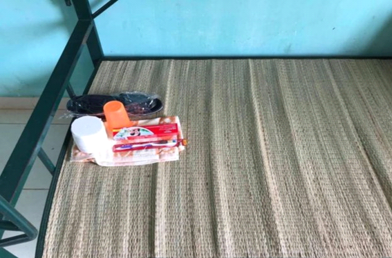
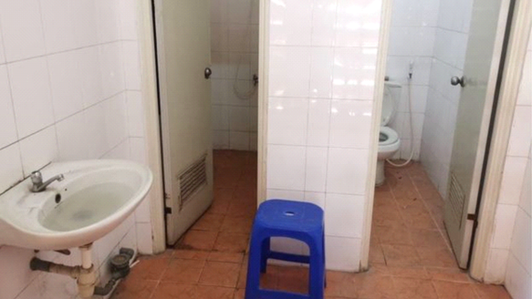
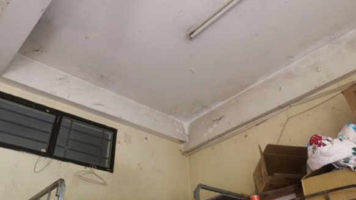

Evaluation Warning: The document was created with Spire.Doc for .NET.
Virus corrona: Người đang bị cách ly ở TP HCM: ‘Chúng tôi cần được cảm thông’
25 tháng 3 2020
Kinh nghiệm sống trong khung cảnh cách ly tại khu ký túc xá ĐH Quốc gia TP HCM theo lời kể của Lan Anh, một người trở về Việt Nam hôm 22/3 sau hai tuần đến Úc thăm người thân.
Tiếp xúc với BBC News Tiếng Việt, chị Lan Anh (tên đã được đổi) cho biết khi dân mạng ‘ném đá’ chửi việc những người trong khu cách ly này nhận nhiều tiếp tế của người thân, tâm lý của chị trở nên bất ổn hơn.
“Họ nói chúng tôi là những cậu ấm cô chiêu, lá ngọc cành vàng từ trời Tây trở về tránh dịch và mời chúng tôi lên hành tinh khác mà ngự. Nhưng chỉ khi bạn ở đây, chịu cảnh cách ly với điều kiện kém vệ sinh mới hiểu được vì sao mọi người cần tiếp tế”. Chị Lan Anh nói.
“Truyền thông chỉ nhìn vào cái tủ lạnh và chỉ trích chúng tôi sống bề trên, không tự dọn dẹp. Nhưng nhìn hình ảnh xem, bạn đếm được bao nhiêu cái tủ lạnh so với cây lau nhà, xô chậu. Những người đang chịu cách ly cần sự cảm thông hơn là gạch đá miệt thị”.
'Bay vào thời điểm này là ngu dốt'
Theo lịch bay, chị Lan Anh về đến Việt Nam vào ngày 22/3. Từ thời điểm này, chị đã đón nhận những lời chỉ trích của nhiều người.
Chị kể: “Nhiều người nói rằng bay vào thời điểm này là thiếu ý thức, là ngu dốt. Biết sẽ bị cách ly thì đi làm cái gì. Tôi thấy đây là quyết định riêng tư của mỗi người, có những trường hợp bất khả kháng và thực sự tôi cũng đã suy xét kỹ lưỡng”.
“Tôi là một trong những người may mắn vì có sẵn vé khi chính sách gần như thay đổi từng ngày. Người đi du lịch, công tác hay du học đều rơi vào hoảng loạn vì phải chầu chực vé để về Việt Nam. Ngày 18/3, tôi đã có ý định đổi vé để về sớm hơn nhưng tôi nghĩ, nếu cách ly tại nhà, lỡ mình bị nhiễm thì nguyên chung cư tôi ở sẽ bị phong toả. Tiếp nữa, việc đổi vé thời điểm này gây khó khăn cho nhiều người”, chị Lan Anh nhớ lại.
Chị giải thích rằng để chọn về Việt Nam, chị đã phải đối mặt với nhiều nỗi sợ đi qua các ổ dịch và nỗi sợ cách ly.
“Trước hôm về là một ngày cân não. Báo chí đưa tin sân bay Việt Nam quá tải, các khu cách ly cũng quá tải. Tôi lo sợ đến mức ám ảnh khi đọc tin các khu cách ly đã có nhiều người dương tính với Covid-19. Tôi hiểu đây là một ổ dịch tiềm ẩn”.
“Để về Việt Nam, tôi phải băng qua 3 ổ dịch khác: sân bay Úc, chiếc máy bay với những người xa lạ và sân bay Việt Nam. Và sau đó là tới ổ dịch tiềm ẩn tại khu cách ly. Biết là vùng dịch nhưng vẫn lao vào vì không có lựa chọn khác. Số người nhiễm của Úc gấp nhiều lần Việt Nam, cho dù tôi có bảo hiểm thì họ cũng sẽ ưu tiên công dân họ. Chưa kể nhà tôi đang có người nhà đang yếu, một người khác đang điều trị ung thư. Nếu họ có chuyện bất trắc, tôi không có đường nào để về thì sẽ hối hận”.
“Sau khi đi về Việt Nam, tôi nói với người thân mình bên Úc rằng tôi không hối hận vì đã đi thăm họ. Dịch xảy ra, tôi càng thấy điều đó đúng vì tất cả mọi nơi đều phong toả, nếu tôi không đi thăm thì không biết bao giờ mới có thể gặp họ trong thời gian tới. Đó là cái giá tôi chấp nhận trả”. Chị Lan Anh kể tiếp.
Ngỡ ngàng khi bước vào khu cách ly
Trên mạng, nhiều người cập nhật hình ảnh khu cách ly rất đầy đủ tiện nghi: mỗi giường có chăn, gối mền và được phát cho đồ dùng cá nhân. Điều này khiến chị Lan Anh cùng nhiều người khi về đến khu cách ly tại ký túc xá ĐH Quốc gia TP HCM ngỡ ngàng.

Chị phân tích: “Nhiều người lên án việc chúng tôi đã được nhường cho chỗ để ở còn chê than. Nhưng chúng tôi không chê là tại sao nhà nước lại cho ở một nơi như vầy. Tâm lý chung khi bước vào đây là ngỡ ngàng, vì sao những bạn đi học đại học, những người tương lai của đất nước, sống văn minh nhưng lại có thể ở kém vệ sinh như vậy”.
“Khi tôi bước vào, phòng ốc rất tệ, xung quanh mạng nhện tứ bề. Bồn cầu, bồn rửa mặt đen thui, ao tù nước đọng. Cũng may không có mùi hôi nhưng thực sự rất dơ. Giường rỉ sét, mọi thứ đều rất bụi bặm”, chị Lan Anh mô tả.

“Chúng tôi đâu cần tiện nghi vì khi vào đây, ai sao mình vậy. Tiện nghi không cần nhưng sạch sẽ là điều tiên quyết. Ở đây đã là một ổ dịch tiềm ẩn mà điều kiện vệ sinh kém thì thêm một ổ bệnh. Bồn cầu, bồn rửa mặt, nhà tắm dơ đã đủ ẩn chứa các bệnh khác, chưa nói đến là virus”.
“Hầu hết mọi người đêm đầu tiên phải chấp nhận chỉ có một cái chiếu, không gối, không mền. Trong phòng chỉ có một cái quạt trần. Vì quá nóng, có bạn trong phòng tôi thân nhiệt tăng đến gần mức bị theo dõi. Hôm nay mọi người được tiếp tế thêm quạt nên đã ổn hơn”, chị Lan Anh chia sẻ.

Chị nói thêm, tâm lý bất ổn bắt đầu từ những thứ rất nhỏ như vậy: điều kiện vệ sinh kém, nỗi sợ mình trở thành mầm bệnh, sợ mọi người xung quanh sẽ dương tính với virus, sợ mình sẽ là F1 và tiếp tục bị cách ly thêm 14 ngày. Bên cạnh đó, vì quá mới nên công tác tổ chức chưa có quy trình hay thông báo cụ thể để giúp người trong khu cách ly an tâm về việc được theo dõi sức khoẻ, tránh việc lây nhiễm chéo.
“Trong khu cách ly này, tôi chỉ được đo nhiệt độ. Trên 37,5 độ thì sẽ được theo dõi đặc biệt. Nhưng tôi phải hỏi thì mới được giải đáp chứ không có phổ biến chung. Chúng tôi không nhận được thông báo về quy trình, chưa được làm rõ về lý do vì sao không được xét nghiệm. Vì bị hụt thông tin nên tôi càng hoang mang. Tôi không phải là người ‘ngu si hưởng thái bình’. Tôi cần sự yên tâm rằng mình đang ở trong ổ dịch nhưng vẫn trong sự kiểm soát”, chị Lan Anh nhấn mạnh.
‘Giàu là cái tội. Bay về là cái tội’
Khi những cuộc ‘ném đá’ trên mạng nhắm vào người trong khu cách ly này về chuyện tiếp tế và chính phủ đã quyết định ngưng lại việc này, chị Lan Anh tự hỏi mình: "Chúng tôi đang là những người đang bị thiếu sự cảm thông trầm trọng. Không ai hiểu mà chỉ nhìn và phán xét. Thương người thì thương cho trót, ai cũng nên thương trong hoạn nạn này”.
Nỗi lo lắng của chị càng căng thẳng khi mỗi ngày thức dậy, tự hỏi không biết có ai bị nhiễm không, mình có là mầm bệnh không vì môi trường sống quá gần nhau: dùng chung nhà vệ sinh, ăn chung. Gánh lo chưa vơi thì ngoài kia, chị đã hứng chịu những lời chửi rủa, miệt thị và sự hung hãn của cộng đồng mạng về câu chuyện tiếp tế.
Chị kể, ngày đầu, muốn hỏi các nhân viên phục vụ chổi hay cây lau nhà để dọn vệ sinh cũng vô vọng vì chính họ cũng quá tải nên cả phòng phải chờ người nhà tiếp tế vào: “Phòng chúng tôi mang vào là những dụng cụ thiết yếu đó. Việc tiếp tế, có người đặt những đồ linh tinh và nó làm ảnh hưởng những người cần tiếp tế các nhu yếu phẩm căn bản. Tôi không yêu cầu cuộc sống tốt nhưng vì điều kiện quá kém nên cần tiếp tế để ở mức chịu được”.
“Chúng tôi bị chửi vì là du học sinh, thứ có tiền đi du lịch, bị lên án bay về nước là gánh nặng. Giàu là cái tội. Bay về là cái tội. Ở ngoài ném đá vô rất nhiều, người bên trong ít cãi cự lại. Vì bây giờ, chúng tôi là người yếu thế, yếu ớt về mặt tinh thần. Ở trong đây, giàu hay nghèo cũng như nhau”, chị Lan Anh tâm sự.
Trước những ‘gạch đá’ đó, chị chọn lựa cách im lặng: “Tôi cố gắng không cãi nhau với bên ngoài vì không muốn mang năng lượng tiêu cực, để tinh thần thoải mái. Có như vậy, sức đề kháng mới tốt, tránh nguy cơ nhiễm virus”.
Chị chia sẻ, cả phòng phải học cách truyền năng lượng tích cực cho nhau: “Họ nói chúng tôi phải tự thấy may mắn vì có người đang cực khổ lo cho mình, hay ngoài kia có những phận đời nghèo khổ không cơm ăn áo mặc trong khi đang được nhà nước nuôi thì hãy biết ơn. Nhưng tích cực chỉ đến từ bên trong bản thân mỗi người, khi nỗi sợ quá nhiều thì việc so sánh ai may mắn hơn ai là điều vô nghĩa”.
Nên đối với chị, điều tích cực trong cơn đại dịch này chính là biết được sức chịu đựng của mình, hiểu thấu con người mình: “Ai đi ra khỏi khu cách ly chắc sẽ sống hiền lành hơn, lạc quan hơn. Ai sống sót qua những ngày tháng này sẽ đủ bản lĩnh để yêu thương người khác và độ lượng với chính mình”.
“Cũng là Sài Gòn, cũng là về nhà nhưng cách nhau một cánh cổng cách ly khiến người ta xa cách cả tấm lòng. Tôi chỉ mong sau cơn hoạn nạn, sau quá nhiều chấn động và sau khi cách ly, người ta không cách lòng, không nghi kị nhau và làm đau nhau”, chị Lan Anh bộc bạch.